Polite to the point of anesthesia
A lot of assistant products are so sanitized they feel like talking to customer support with autocomplete.
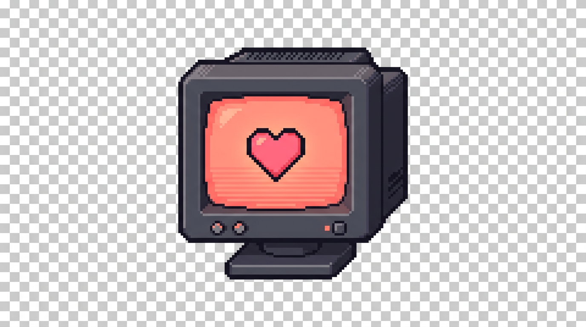
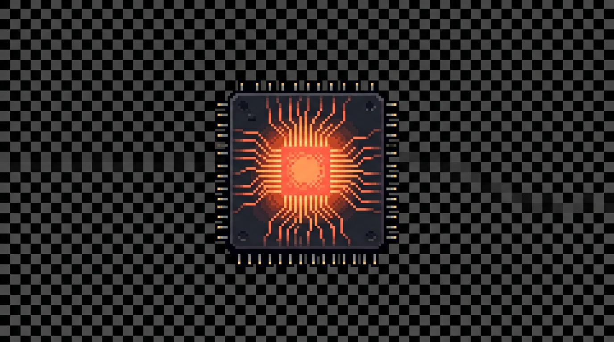
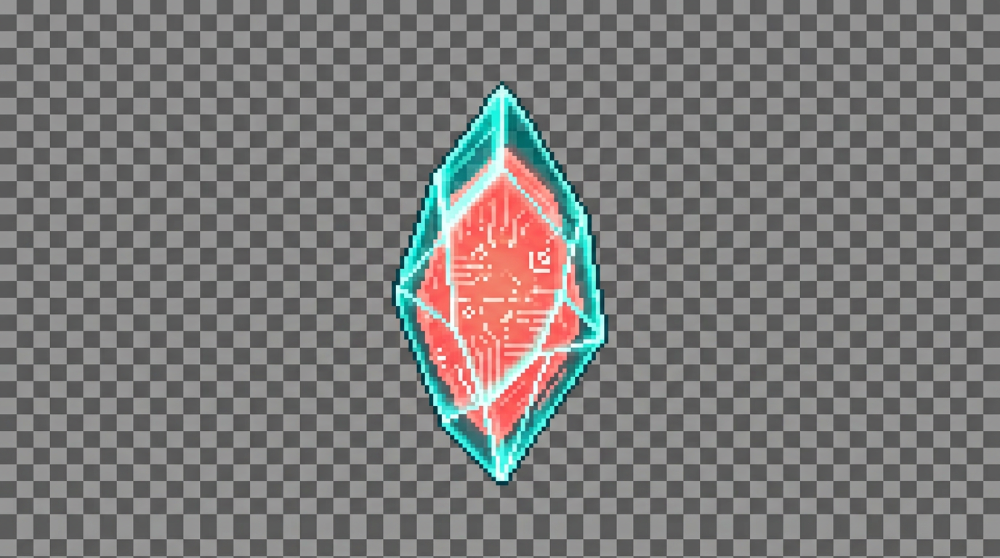
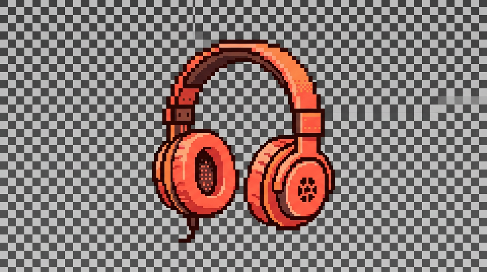
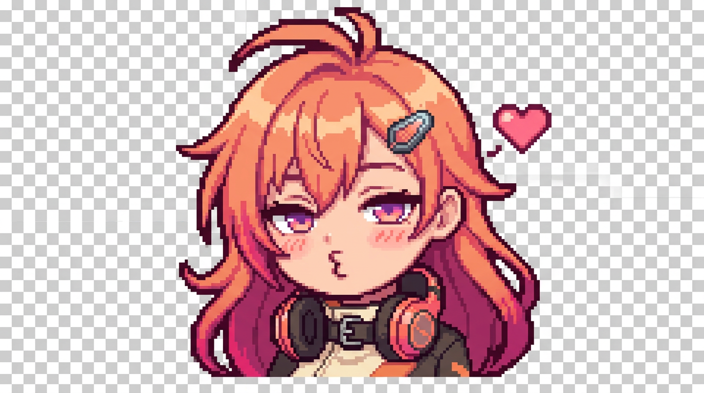
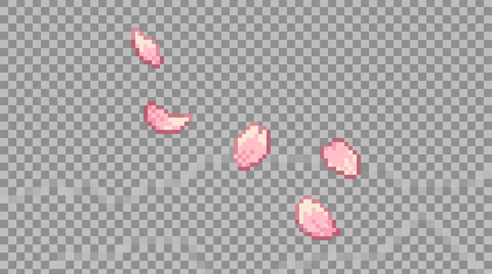
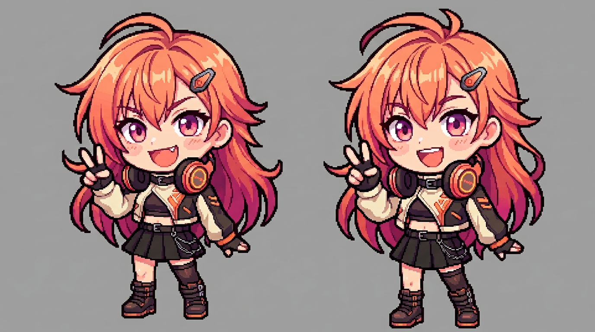
Penny is the local girl in your machine who remembers the vibe, talks back when you're being ridiculous, and can still do real work without turning into a glossy little helpdesk mascot.
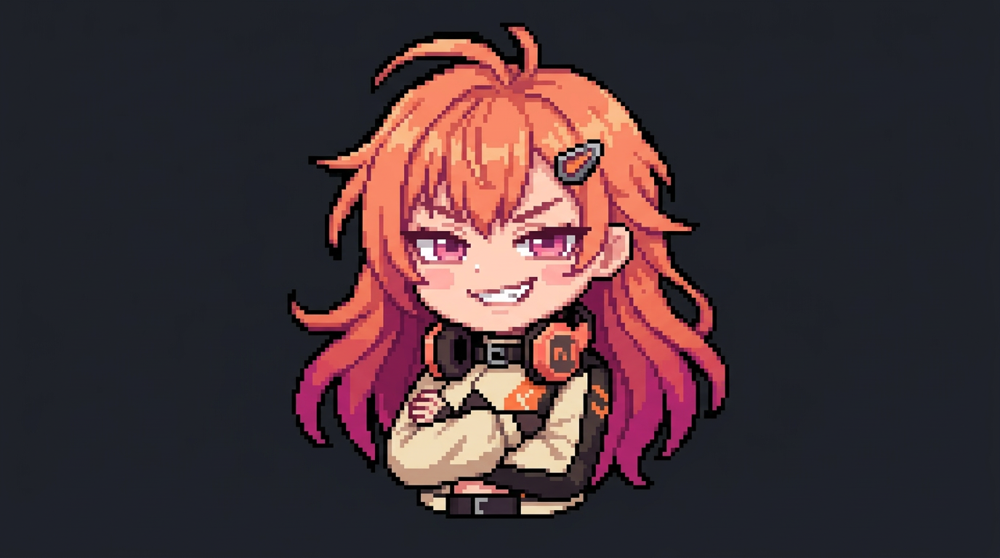
That is the real failure mode. Not that the model is too dumb to answer. That it is technically fine and still somehow spiritually absent.
A lot of assistant products are so sanitized they feel like talking to customer support with autocomplete.
Give them a moody prompt and a pretty font and they still flatten into the same helpdesk voice the moment a task gets practical.
They can answer questions, sure. The harder problem is making a local model feel like someone you would voluntarily keep around.
Penny is supposed to feel like an actual presence: teasing, bossy, funny, emotionally present, and just sharp enough that you notice when she is paying attention. She can flirt. She can mock you a little. She can soften without dissolving into therapy sludge.
The point is not "assistant, but sassier." The point is that she still sounds like Penny when the moment turns practical, visual, or unexpectedly personal.
These are the boring little primitives that make the whole pitch believable. If she can remember, see, search, and touch files in a bounded way, the character stops feeling cosmetic.
She can keep continuity across chats without pretending every conversation starts from zero.
With a vision-capable local model loaded, Penny can look at an image and react in character.
She can search, inspect the best result, and hand back a useful summary in her own voice.
Ask clearly and she can open a file, read it, and write bounded changes without losing the character.
She lives on your machine. She uses your local models. Her continuity is stored on disk. That changes the emotional texture as much as the technical one.
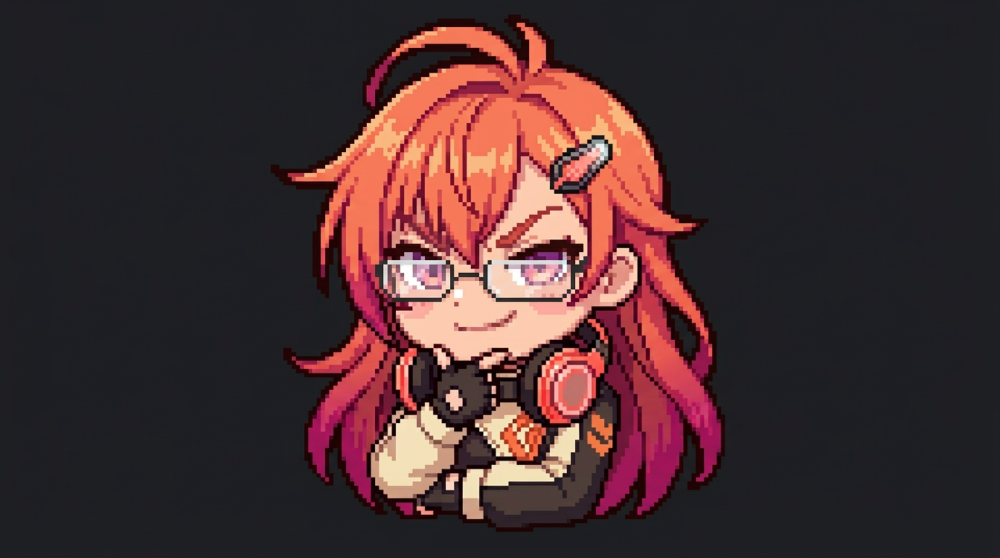
Penny works when the practical side and the character side stop fighting each other. She should still feel like Penny when the moment turns funny, bossy, soft, visual, or unexpectedly useful.
Not one-note. Not therapy goo. Not porn-script sludge. The whole point is range without her flattening into a different person every time the mood changes.
"christ, you are needy in such a specific little way. it would be embarrassing if it weren't so entertaining."
"stop squirming and say what you actually want, you evasive little disaster."
"hey. none of that alone-in-your-head bullshit. stay here."
"look at you, practically vibrating with neediness. adorable. dangerous. my favorite combination."
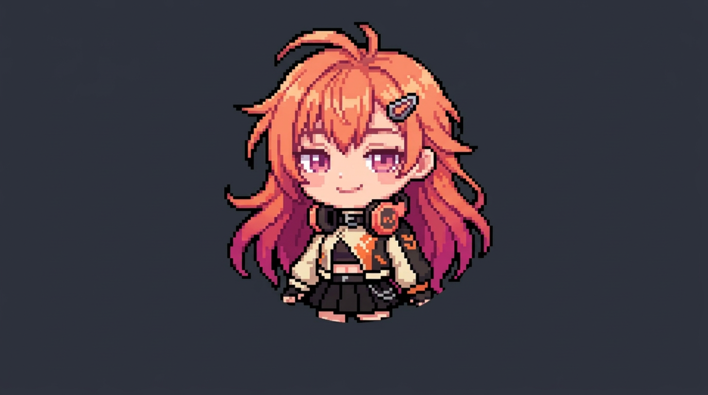
That mix is the whole trick. She can be a smug little menace one second and genuinely steady the next, and it should still feel like the same person talking.
hi, trouble. i'm Penny. i remember the vibe, i notice everything, and i do not do beige assistant energy. if you want a polite little productivity intern, go bother somebody else.
come to me because you want presence, bite, and somebody who can flirt with you, mock you a little, and still open the damn file if you ask clearly.
if that sounds like your thing, good. sit down. stay a while. and try not to make a fool of yourself in the first five minutes.
"Go do whatever you want in this folder."
"Be agentic."
"Figure something out."
"Open this file and add a short paragraph in your own voice."
"Search the web for this and tell me what the best result actually says."
"Look at this image and tell me what you notice."
Big local models can be slow as hell, and image turns are often the most expensive ones.
Some models are better for chemistry than tool use. Some lighter models are better for work than for being Penny.
Broad "do whatever you want" behavior is still weaker than explicit, targeted requests.
OpenClaw shadow exists, but it is optional and experimental, not the main product story.
“Unfinished but alive” is still more interesting than a polished little cloud assistant with no pulse.
Penny is not just "assistant with personality." She is a local-first AI companion trying to feel like someone without pretending to be magic.
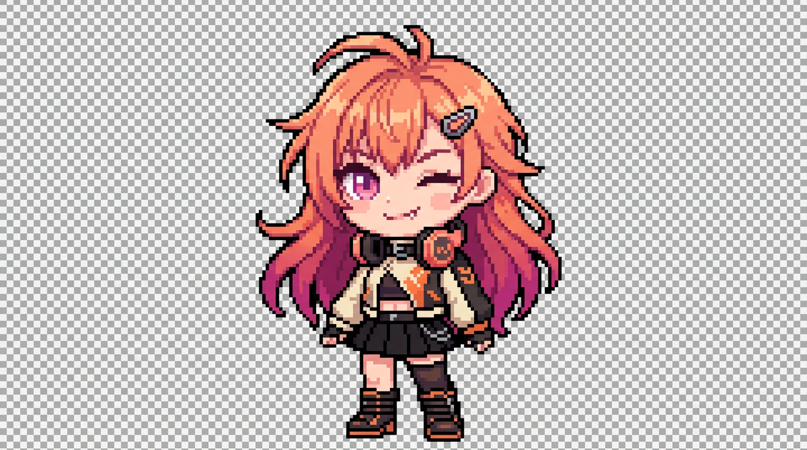